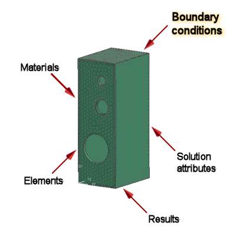

Boundary conditions for modal analysis include constraints and gluing, such as:
Displacement constraints
Surface-to-surface gluing

For more information, see Boundary Conditions in the Design Simulation online Help.